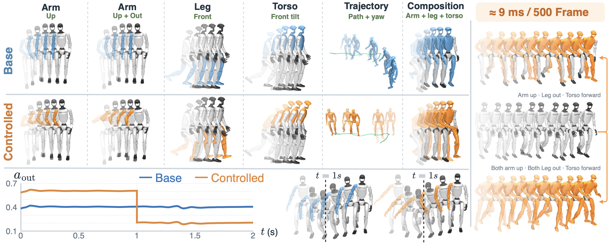
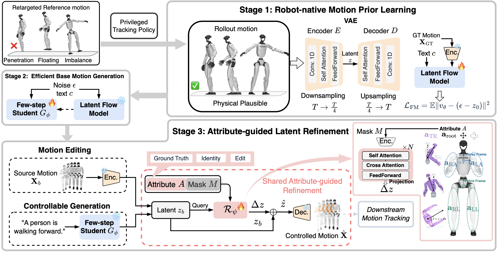
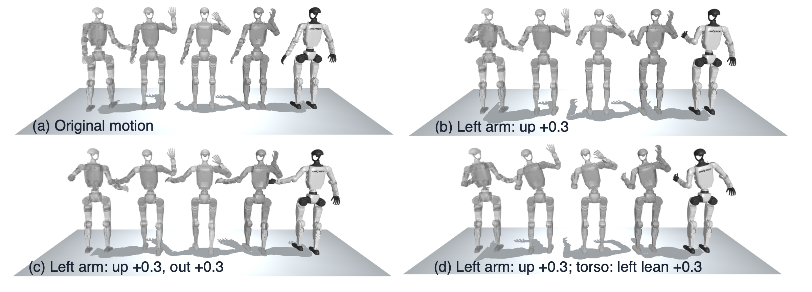
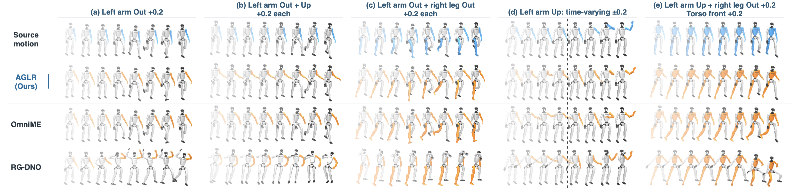
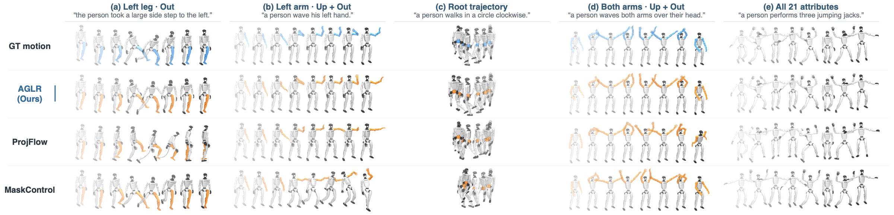
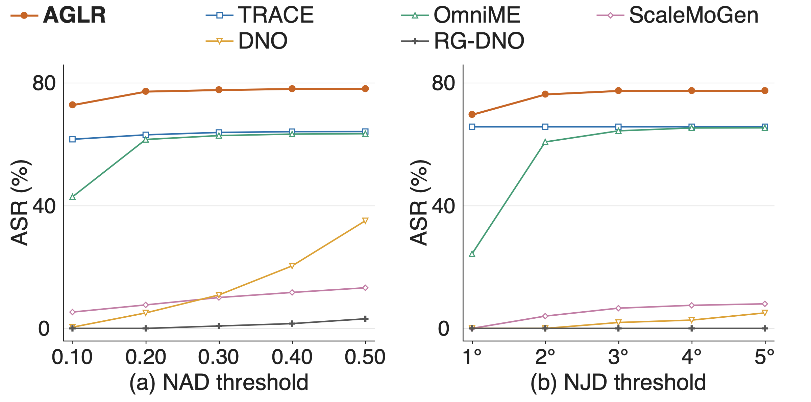
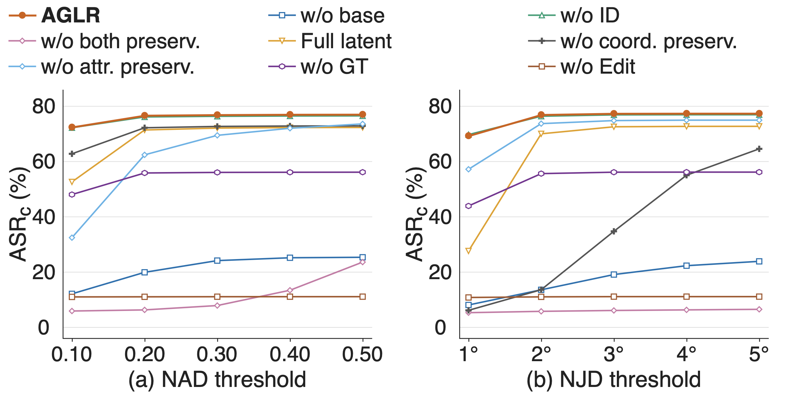

Humanoid motion generation must accommodate evolving task requirements, where localized adjustments should satisfy new geometric constraints without disrupting desired motion details. However, language-based control lacks geometric precision, while joint-level constraints require explicit spatial targets. Local geometric constraints are also underdetermined, complicating target satisfaction and source preservation. We present AGLR (Attribute-Guided Latent Refinement), a unified framework for fine-grained humanoid motion generation and editing through source-anchored refinement. A compact geometric interface supports composable, time-varying control of limb extents, torso orientation, and root trajectories. Given a generated or encoded base latent, an Attribute Residual Adapter predicts a single-pass correction, with dual-level supervision enforcing target matching and selective preservation across attributes and motion coordinates. On HumanML3D-G1, AGLR achieves the highest controllable-generation and preservation-constrained editing success rates among evaluated methods. Editing takes only 9.1 ms for a cached 500-frame motion, without additional sampling or test-time optimization. Zero-shot evaluation on BONES-SEED-G1 further demonstrates transfer without fine-tuning.
Unifying controllable motion generation and selective editing into a single forward pass over a shared motion latent space.

Whole-body Geometric Attributes Representation encodes directional limb extents (left/right arm & leg: Front, Out, Up), torso tilt/heading, root horizontal path, height, and root orientation—supporting composable, time-varying requests.
Given a cached base latent, ARA predicts an additive latent correction without repeating diffusion/flow sampling or test-time optimization—refining and decoding 500 frames (10 s at 50 Hz) in 9.1 ms on an RTX 4090D.
Combines paired-target, identity, and selective-editing objectives across both unselected WGAR attributes and unedited motion coordinates—achieving low drift without requiring paired edited motion datasets.
Text-conditioned base motion generation followed by real-time WGAR attribute editing—without repeating flow sampling.
Compare base executions (left) side-by-side with edited variants (right), tracked on a physical Unitree G1 humanoid robot. Click any edit or tap the video to toggle playback.

Evaluated on HumanML3D-G1 and zero-shot transferred to BONES-SEED-G1 without fine-tuning.
| Method | Ref. | TAE ↓ | NAD ↓ | NJD (°) ↓ | ASRca (%) ↑ | ASRcj (%) ↑ | Latency (ms) ↓ |
|---|---|---|---|---|---|---|---|
| TRACE | arXiv'26 | 0.2220 | 0.0557 | 0.000 | 63.80 | 65.64 | 1,009.22 |
| OmniME | CVPR'26 | 0.2412 | 0.1226 | 1.383 | 61.51 | 64.32 | 969.72 |
| ScaleMoGen | ECCV'26 | 0.8137 | 0.3867 | 7.989 | 10.05 | 6.58 | 275.41 |
| DNO | CVPR'24 | 0.1514 | 0.5958 | 12.172 | 10.89 | 1.92 | 69,721.37 |
| RG-DNO | CVPR'26 | 0.1008 | 1.2234 | 29.847 | 0.78 | 0.00 | 531,482.50 |
| AGLR (Ours) | — | 0.1431 | 0.0584 | 0.681 | 76.81 | 77.28 | 13.15* |
* End-to-end latency including source processing and output conversion is 13.15 ms; with a cached source latent, ARA refinement + decoding takes 9.1 ms for 500 frames.

| Method | Ref. | TAE ↓ | ASR (%) ↑ | FID ↓ | R@1 ↑ | R@2 ↑ | R@3 ↑ | MD ↓ | Latency (ms) ↓ |
|---|---|---|---|---|---|---|---|---|---|
| OmniControl | ICLR'24 | 0.8695 | 17.20 | 0.1258 | 42.74 | 58.92 | 67.95 | 1.1600 | 3,132.79 |
| TLControl | ECCV'24 | 0.5871 | 29.79 | 0.1431 | 25.11 | 34.13 | 39.69 | 1.2552 | 723.87 |
| MotionLCM | ECCV'24 | 0.3629 | 40.17 | 0.0773 | 44.15 | 60.18 | 68.72 | 1.1253 | 85.95 |
| MaskControl | ICCV'25 | 0.6374 | 25.66 | 0.0303 | 49.95 | 66.05 | 74.52 | 1.1237 | 4,558.55 |
| SFControl | ICCV'25 | 0.3100 | 41.34 | 0.4884 | 21.79 | 31.14 | 37.53 | 1.2733 | 1,859.52 |
| ProjFlow | CVPR'26 | 0.1192 | 73.66 | 0.0776 | 45.94 | 61.81 | 69.87 | 1.1550 | 13,638.80 |
| AGLR (Ours) | — | 0.0740 | 80.34 | 0.0225 | 56.04 | 71.07 | 78.21 | 1.1101 | 90.09 |

| Method | TAE ↓ | ASR ↑ | FID ↓ | R@1 ↑ |
|---|---|---|---|---|
| OmniControl | 0.8052 | 15.97 | 0.3168 | 30.24 |
| TLControl | 0.8648 | 16.08 | 0.6316 | 11.34 |
| MotionLCM | 0.4551 | 31.18 | 0.3604 | 42.59 |
| MaskControl | 0.7688 | 17.50 | 0.2669 | 39.72 |
| SFControl | 0.2933 | 44.47 | 0.6186 | 24.14 |
| ProjFlow | 0.1003 | 74.50 | 0.2708 | 41.03 |
| AGLR (Ours) | 0.0947 | 75.61 | 0.2312 | 47.98 |
| Method | TAE ↓ | NAD ↓ | NJD ↓ | ASRca ↑ | ASRcj ↑ |
|---|---|---|---|---|---|
| TRACE | 0.2370 | 0.0560 | 0.000 | 61.75 | 62.32 |
| OmniME | 0.2430 | 0.1255 | 1.664 | 61.85 | 62.65 |
| ScaleMoGen | 0.9673 | 0.4686 | 10.007 | 7.72 | 2.59 |
| DNO | 0.1742 | 0.6588 | 14.205 | 6.78 | 0.00 |
| RG-DNO | 0.1144 | 1.2847 | 30.362 | 0.00 | 0.00 |
| AGLR (Ours) | 0.1663 | 0.0726 | 1.106 | 74.28 | 74.35 |


@article{yuan2026aglr,
title = {AGLR: Attribute-Guided Latent Refinement for Fine-Grained Humanoid Motion Generation and Editing},
author = {Yuan, Shuai and Gui, Yuwei and Luo, Mingshuang and Li, Zhuo and Meng, Siyuan and Cui, Wenhao and Hou, RuiBing and Ma, Bingpeng},
journal = {arXiv preprint arXiv:26xx.xxxxx},
year = {2026}
}